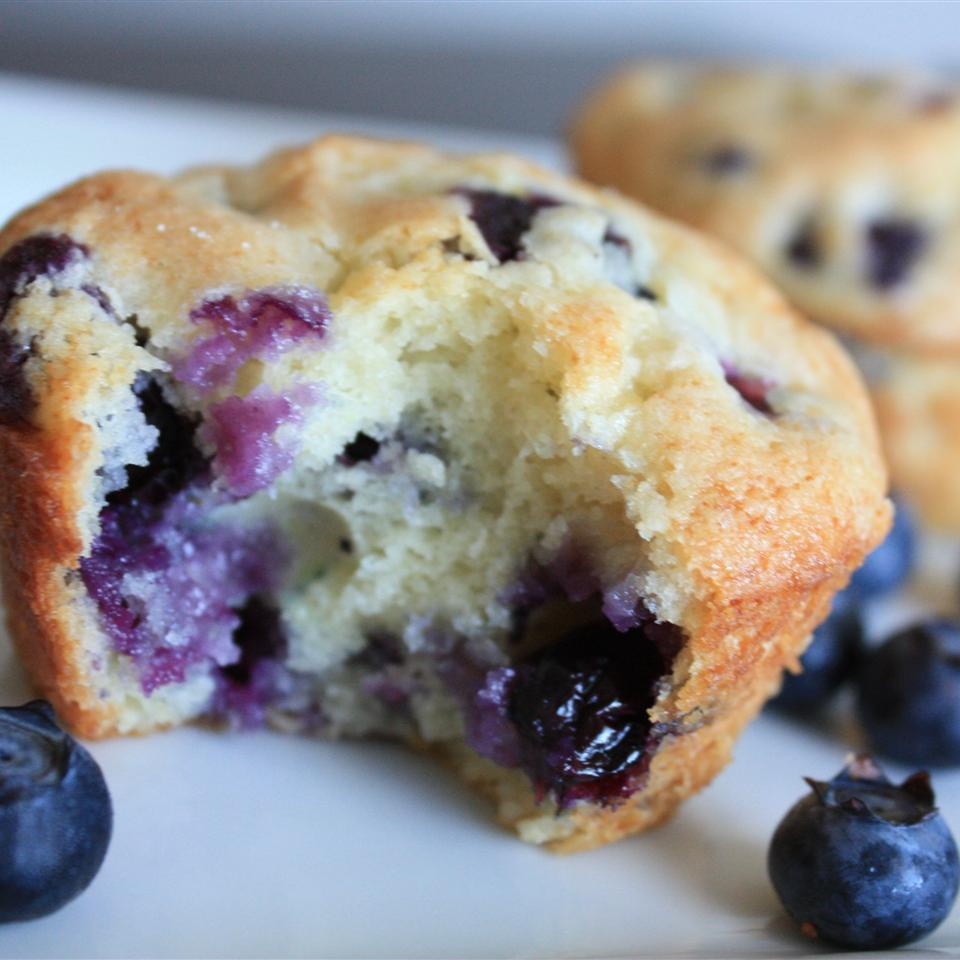

This Page was recreated for educational purposes. This is not my recipe.
Big Blueberry muffins with a crusty sugar topping. A recipe I got from my Grandma. The blueberries and the sweet batter are fabulous together. Favorites of all who have tried them. Quick and easy, made with few ingredients. Remember to use paper liners!
By AUNTIELYNNIE
